콘크리트기사 (2008-07-27 기출문제)
1과목: 재료 및 배합
1. 시멘트의 비표면적에 관한 설명 중 틀린 것은?
- 블레인 공기 투과장치를 사용하여 시험할 수 있다.
- 시멘트의 분말도를 나타내는 방법이다.
- 시멘트 내의 공기량을 측정하는 시험이다.
- 초기강도는 비표면적이 큰 콘크리트가 높다.
(정답률: 알수없음)

2. 잔골재의 표면수량을 측정한 값이 약 1.33%로 측정되었다. 아래의 표를 이용하면 이 골재의 표면건조 포화 상태의 시료 무게를 구하면?
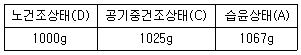
- 1⑤3.0g
- 1⑤3.5g
- 1⑤4.0g
- 1⑤4.5g
(정답률: 알수없음)
3. 레미콘공장 회수수 중 슬러지수를 혼합수로 사용하는 경우의 유의사항에 관한 다음 설명 중 적당하지 않은 것은?
- 슬러지 고형분은 시멘트 질량의 3%이하로 한다.
- 슬러지 고형분이 많은 경우에는 단위수량을 증가시킨다.
- 슬러지 고형분이 많은 경우에는 잔골재율을 증가시킨다.
- 슬러지 고형분이 많은 경우에는 AE제의 사용량을 증가시킨다.
(정답률: 알수없음)
4. 콘크리트 배합에 관한 일반적인 사항 중 가장 적절하지 않은 것은?
- 공사 중에 잔골재의 입도가 변하여 조립률이 ±0.2 이상 차이가 있을 경우에는 워커빌리티가 변하므로 배합을 수정할 필요가 있다.
- 고성능 AE감수제를 사요한 콘크리트의 경우로서 물-시멘트비 및 슬럼프가 같으면, 일반적인 AE감수제를 사용한 콘크리트와 비교하여 잔골재율을 1~2%정도 크게 하는 것이 좋다.
- 고강도콘크리트는 기상변화가 크지 않고 동결융해의 염려가 없으면 AE제를 사용하지 않는 것을 원칙으로 한다.
- 콘크리트를 경제적으로 만들기 위해서는 일반적으로 최대치수가 작은 굵은골재를 사용하는 것이 유리하다.
(정답률: 55%)
5. 다음 중 콘크리트용 고로 슬래그 미분말의 품질평가 항목에 포함되지 않는 항목은?
- 밀도
- 비표면적
- 산화마그네슘(MgO)
- 이산화규소(SiO2)
(정답률: 알수없음)
6. 굵은골재의 체가름 시험결과에서 굵은골재 최대치수(Gmax)와 조립률(FM)을 바르게 표시한 것은?
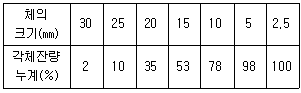
- 25mm, 1.77
- 25mm, 7.76
- 20mm, 7.11
- 20mm, 7.76
(정답률: 알수없음)
7. 쇄석을 사용한 콘크리트의 특징으로 틀린 것은?
- 강자갈을 사용한 콘크리트에 비래 작업성이 떨어진다.
- 물-시멘트비가 같은 경우 강자갈을 사용한 콘크리트보다 시멘트페이스트의 부착력을 높일 수 있다.
- 강자갈을 사용한 경우와 같은 슬럼프를 얻기 위해서는 단위수량이 증가한다.
- 쇄석은 입형이 평평하기 때문에 강자갈보다 실적율이 높다.
(정답률: 알수없음)
8. 콘크리트용 모래에 포함되어있는 유기물순물 시험방법에 대한 설명으로 틀린 것은?
- 식별용 표준색용액은 2%의 탄닌산 용액과 3%의 수산화나트륨용액을 섞어 만든다.
- 시험에 사용되는 모래시료의 양은 약 450g을 채취한다.
- 시험시료에는 3%의 수산화나트륨 용액을 넣는다.
- 시험이 끝난 시료의 용액색이 표준색 용액보다 연한 경우에는 콘크리트용 골재로 사용할 수 없다.
(정답률: 알수없음)
9. AE제의 사용 목적 및 효과에 대한 설명으로 틀린 것은?
- AE제를 사용하면 일반적으로 콘크리트의 동결융해 저항성이 개선된다.
- AE제로 연행된 공기에 의한 볼베어링 효과로 작업성이 개선된다.
- 공기량이 증가할수록 강도가 저하하기 때문에 공기량은 약 3~6% 정도의 범위가 되도록 하는 것이 좋다.
- 혼화재로서 플라이애시를 함께 사용하면 공기 연행효과를 높일 수 있다.
(정답률: 알수없음)
10. 모래 A의 조립률이 3.2이고, 모래 B의 조립률이 2.2인 모래를 혼합하여 조립률 2.8의 모래 C를 만들려면 모래 A와 B는 얼마의 비율로 섞어야 하는가?
- A : 30%, B : 70%
- A : 40%, B : 60%
- A : 50%, B : 50%
- A : 60%, B : 40%
(정답률: 알수없음)
11. 실리카퓸을 혼합한 콘크리트 성질에 대한 설명으로 틀린 것은?
- 실리카퓸을 혼합한 콘크리트의 목표 슬럼프를 유지하기 위해 소요되는 단위수량은 혼합량이 증가함에 따라 거의 선형적으로 증가한다.
- 실리카퓸은 비표면적이 작고 미연소 탄소를 함유하지 않기 때문에 목표 공기량을 유지하기 위해 혼합률이 증가함에 따라 AE제의 사용량을 증가시킬 필요가 없다.
- 물-결합재비를 낮추기 위하여 고성능 감수제의 사용은 필수적이다.
- 실리카퓸을 혼합하면 블리딩과 재료분리를 감소시킬 수 있다.
(정답률: 60%)
12. 시멘트 관련 KS 규격에 관하여 옳지 않은 것은?
- 저열 포틀랜드 시멘트에서는 수화열을 억제하기 위하여 최저 C2S량을 규정하고 있다.
- 내황산염 포틀랜드 시멘트에서는 황산염에 의한 팽창을 억제하기 위하여 최대 C3A량을 규정하고 있다.
- 고로슬래그시멘트에서는 잠재수경성을 확보하기 위하여 염기도의 최소값을 규정하고 있다.
- 고로슬래그시멘트에서는 알칼리골재반응을 억제하기 위하여 최대 알칼리량을 규정하고 있다.
(정답률: 알수없음)
13. KS F 4009에는 레디믹스트 콘크리트의 혼합에 사용되는 물에 대해 규정하고 있다. 다음 중 레디믹스트 콘크리트에 사용할 수 없는 혼합수는?
- 염소 이온(Cl-)량이 300mg/L의 지하수
- 혼합수로서 품질시험을 실시하지 않은 상수돗물
- 용해성 증발 잔류물의 양이 1g/L의 하천수
- 모르타르의 재령 7일 및 28일 압축강도비가 90%인 회수수
(정답률: 알수없음)
14. 콘크리트 배합수에 함유된 불순물의 영향으로 옳지 않은 것은?
- 염화나트륨과 염화칼슘은 농도가 증가하면 건조수축을 증가시킨다.
- 후민산나트륨은 응결을 지연시키며, 콘크리트의 강도를 저하시킨다.
- 탄산나트륨은 응결촉진작용을 나타내며, 농도가 높으면 이상응결을 발생시킨다.
- 황산칼륨은 응결을 현저히 촉진시키며, 장기강도를 저하시킨다.
(정답률: 알수없음)
15. 잔골재량이 770kg/m3, 굵은골재량이 950kg/m3인 시반배합을, 잔골재 중의 5mm체 잔류율이 3%, 굵은골재 중의 5mm체 통과율이 5%인 현장에서 현장배합으로 고칠 경우 입도보정에 의한 잔골재량은 약 얼마인가?
- 707kg/m3
- 743kg/m3
- 795kg/m3
- 826kg/m3
(정답률: 알수없음)
16. 아래 표의 조건에서의 콘크리트의 시방배합의 계산결과에 관한 다음 설명 중 틀린 것은? (단, 시멘트 밀도는 3.15 g/cm3, 세골재 및 조골재의 표건밀도는 각각 2.57g/cm3 및 2.67g/cm3이고 골재는 표면건조포화상태이다.)
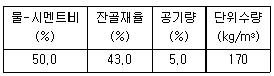
- 단위시멘트량은 340kg/m3이다.
- 단위잔골재량은 약 798kg/m3이다.
- 단위굵은골재량은 약 1023kg/m3이다.
- 골재의 절대용적은 약 672ℓ이다.
(정답률: 알수없음)
17. 시멘트 클링커 광물등에 대한 상대비교 설명으로 올바른 것은?
- 알라이트(C3S)는 육각판상에 가까운 구조로서 수화반응 속도가 빠르다.
- 벨라이트(C2S)는 시멘트 클링커의 대부분을 차지하며 수화반응 속도가 느리다.
- 알루미네이트 C3AF)는 고온에서 클링커중에 생성된 발열량이 가장 크다.
- 페라이트(C4AF)는 고온에서 클링커중에 생성된 액상으로부터 냉각되어 생성되는 것으로 수화에 의한 발열량이 가장 크다.
(정답률: 알수없음)
18. 콘크리트 배합설계 시 굵은골재의 최대치수에 관한 기준으로 틀린 것은?
- 굵은골재의 최대치수는 부재 최소치수의 1/5을 초과해서는 안된다.
- 단면이 큰 철근콘크리트 구조물의 경우 40mm를 표준으로 한다.
- 무근콘크리트의 경우 부재 최소치수의 1/4을 초과해서는 안된다.
- 철근의 피복 및 철근의 최소 순간격의 3/5을 초과해서는 안된다.
(정답률: 알수없음)
19. 시멘트 제조 방법 중 습식법에 대한 설명으로 옳지 않은 것은?
- 열량 손실이 많다.
- 원료를 미분말화 하기가 쉽다.
- 먼지가 적게 난다.
- 원료 분쇄기에 물을 약 10%정도 가한 후 분쇄 한다.
(정답률: 알수없음)
20. 다음 중 특수콘크리트의 배합시 고려해야 할 사항으로 잘못된 것은?
- 한중콘크리트는 초기 강도의 발현이 중요하므로, 감도를 저해할 수 있는 AE제 등 혼화제 사용은 피한다.
- 서중콘크리트는 수화열을 줄이기 위해 단위수량 및 단위시멘트량을 가능한 한 줄이는 것이 좋다.
- 매스콘크리트는 수화열을 줄이기 위해 플라이애시 등 혼화재의 사용을 적극 검토하는 것이 좋다.
- 경량골재콘크리트는 AE콘크리트로 하는 것을 원칙으로 한다.
(정답률: 알수없음)
2과목: 제조, 시험 및 품질관리
21. 콘크리트의 크리프에 대한 설명으로 잘못된 것은?
- 배합 시 시멘트량이 많을수록 크리프는 크다.
- 보통시멘트를 사용한 콘크리트는 조강시멘트를 사용한 경우보다 크리프가 크다.
- 물-시멘트비가 작을수록 크리프는 크다.
- 부재치수가 작을수록 크리프는 크다.
(정답률: 알수없음)
22. 다음 중 소성수축균열이 발생할 수 있는 경우는?
- 철근 및 기타 매설물에 의하여 침하가 국부적으로 방해를 받는 방법
- 바람이나 높은 기온으로 인하여 블리딩 발생량보다 표면수의 증발이 빠른 경우
- 굳지 않은 콘크리트 상태에서 하중을 가한 경우
- 외부의 구속조건이 큰 경우
(정답률: 알수없음)
23. 콘크리트의 내동해성에 관한 설명으로 틀린 것은?
- 공기량이 동일한 경우 기포간격 계수(spacing factor)가 클수록 내동해성이 향상된다.
- 연행공기는 내동해성 향상에 효과적이다.
- 흡슈율이 큰 연석은 동결 시 팝아웃(Pop-out)을 유발시킨다.
- 내동해성은 동결융해를 반복한 공시체의 동탄성계수에 의해 평가할 수 있다.
(정답률: 82%)
24. 다음 콘크리트의 비파괴 시험 중 균열의 깊이를 측정하는 데 가장 효과적인 것은?
- 초음파법
- 반발경도법
- 어쿠스틱 애미션법
- 중성화시험법
(정답률: 알수없음)
25. 콘크리트의 건조수축에 관한 설명으로 틀린 것은?
- 플라이 애쉬를 혼입한 경우는 일반적으로 건조수축이 감소한다.
- 건조수축의 주원인은 콘크리트가 수화 작용을 하고 남은 물이 증발하기 때문이다.
- 콘크리트의 단위 수량이 많은 콘크리트일수록 건조수축이 작게 일어난다.
- 염화칼슘을 혼합한 경우는 일반적으로 건조수축이 증가한다.
(정답률: 알수없음)
26. 관리도에 관한 설명으로 옳지 않은 것은?
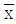
-R관리도 : 평균값과 범위의 관리도 -σ관리도 : 평균값과 표준편차의 관리도
-σ관리도 : 평균값과 표준편차의 관리도- x 관리도 : 측정값 자체의 관리도
- p 관리도 : 단위당 결점 수 관리도
(정답률: 알수없음)
27. KS F 2421에 규정되어 있는 압력법에 의한 굳지 않은 콘크리트의 공기량 시험과 관련된 사항 중 옳지 않은 것은?
- 이 시험 방법은 최대 치수 40mm 이하의 보통 골재를 사용한 콘크리트에 대하여 적당하다.
- 시료를 용기에 거의 같은 두께의 2층으로 나눠서 채우고, 각 층을 다짐봉으로 25회 다진다.
- 진동기로 다지는 경우 KS F 2409에 준하여 실시한다. 다만, 슬럼프가 8cm 이상의 경우 진동기를 사용하지 않는다.
- 다짐 후 다짐 구멍이 없어지고 콘크리트의 표면에 큰 거품이 보이지 않게 되도록 용기의 옆면을 10~15회 나무 망치로 두드린다.
(정답률: 알수없음)
28. 동결융해 저항성을 알아보기 위한 급속 동결융해에 대한 콘크리트의 저항 시험 방법에 관한 설명으로 틀린 것은?
- 동결융해 1사이클의 소요시간은 2시간 이상, 4시간 이하로 한다.
- 동결융해 1사이클은 공시체 중심부의 온도를 원칙으로 하며 원칙적으로 4℃로 상승하는 것으로 한다.
- 시험의 종료는 100사이클로하며, 그 때까지 상대동탄성계수가 75%이하가 되는 사이클이 있으면 시험을 종료한다.
- 공시체의 중심과 표면의 온도차는 항상 28℃를 초과해서는 안된다.
(정답률: 알수없음)
29. 콘크리트의 슬럼프시험방법에 대하여 적당하지 않은 것은?
- 슬럼프콘은 상부 안지름 100mm, 하부 안지름 200mm, 높이 300mm의 강제 콘을 사용한다.
- 시료는 슬럼프콘 용적의 1/3씩 3층으로 나누어 채운다.
- 슬럼프콘에 콘크리트를 채우기 시작하고 나서 슬럼프콘의 들어올리기를 종료할 때까지의 시간은 1분 30초 이내로 한다.
- 슬럼프콘을 연직으로 들어 올리고 콘크리트의 중앙부에서 공시체 높이와의 차를 5mm단위로 측정하여 이것을 슬럼프 값으로 한다.
(정답률: 알수없음)
30. 콘크리트의 배합설계결과 단위시멘트량이 350kg/m3인 경우 1배치가 3m3인 믹서에서 시멘트의 1회 계량값이 1065kg일 때, 계량오차에 대한 판정결과로 옳은 것은?
- 허용 계량오차의 한계인 ±1% 이내이므로 합격
- 허용 계량오차의 한계인 ±1%를 초과하므로 불합격
- 허용 계량오차의 한계인 ±2% 이내이므로 합격
- 허용 계량오차의 한계인 ±2%를 초과하므로 불합격
(정답률: 알수없음)
31. 하중을 원주형공시체(지름 100mm, 높이 200mm)가 파괴될 때까지 가압하고, 시험중에 공시체가 받은 하중이 200Kn이었다면 콘크리트의 압축강도는 얼마인가?
- 25.5MPa
- 26.5MPa
- 30.1MPa
- 34.5MPa
(정답률: 알수없음)
32. 일반 콘크리트 제조시에 재료의 계량에 관한 사항은 콘크리트 표준시방서에서 규정하고 있다. 이 규정을 따를 경우 고로슬래그 미분말의 계량오차의 최대치는 몇 %인가?
- 0.5%
- 1%
- 2%
- 3%
(정답률: 알수없음)
33. 직경 100mm, 길이 200mm인 공시체로 아래 그림과같은 인장강도 시험을 할 때, 최대하중이 100kN이라면 쪼갬인장강도는 얼마인가?
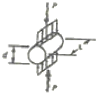
- 1.78MPa
- 3.18MPa
- 4.36MPa
- 5.18MPa
(정답률: 알수없음)
34. 다음에서 콘크리트의 비비깅데 사용되는 믹서 중 강제식 믹서가 아닌 것은?
- 드럼 믹서(drum miver)
- 팬형 믹서(pan type miver)
- 1축 믹서(one shaft miver)
- 2축 믹서(twin shaft miver)
(정답률: 알수없음)
35. 다음 중 콘크리트를 타설할 때 다짐을 실시하는 주목적은 무엇인가?
- 콘크리트 속에 있는 여분의 수분을 없애기 위해서
- 콘크리트를 균등하게 혼합하기 위해서
- 콘크리트를 거푸집 내부에 밀실하게 채우기 위해서
- 콘크리트의 블리딩을 촉진시키기 위해서
(정답률: 알수없음)
36. 레디믹스트 콘크리트의 받아들이기 검사에 있어서 시험규정에 대한 설명으로 잘못된 것은?
- 강도시험 1회의 시험결과는 구입자가 지정한 호칭강도의 85% 이상 이어야 한다.
- 콘크리트의 강도 시험 횟수는 원칙적으로 100m3당 1회의 비율로 한다.
- 공기량은 특별한 지정이 없는 한 보통 콘크리트의 경우 4.5%, 경량콘크리트의 경우 5.5%로 하되 그 허용오차는 ±1.5%로 한다.
- 콘크리트 중 염화물함유량의 허용치는 염소이온(Cl-)량으로서 0.30kg/m3이하이어야 한다. 다만, 구입자의 승인을 얻은 경우에 0.60kg/m3이하로 할 수 있다.
(정답률: 알수없음)
37. 콘크리트의 품질관리의 기본 4단계를 순차적으로 나열한 것은?
- 계획-실시-검토-조치
- 계획-검토-실시-조치
- 검토-계획-실시-조치
- 검토-실시-계획-조치
(정답률: 알수없음)
38. 시험조건이 콘크리트의 압축강도에 영향을 미치는 경우에 대한 설명으로 잘못된 것은?
- 공시체의 높이와 지름의 비가 클수록 강도는 증가한다.
- 습윤양생 후 공기 중에 건조시키면 일시적으로 강도는 높게 나타난다.
- 재하속도가 빠를수록 압축강도는 크게 나타난다.
- 공시체의 가압면에 요철(凹凸)이 있는 경우 강도가 작게 측정된다.
(정답률: 59%)
39. 콘크리트의 압축강도시험 데이터를 보고 불편분산을 올바르게 구한 것은?
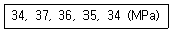
- 1.30
- 1.70
- 2.46
- 3.25
(정답률: 알수없음)
40. 콘크리트의 블리딩을 증가시키는 용인으로 적합하지 않은 것은?
- 단위수량의 증가
- 시멘트 분말도의 증가
- 콘크리트 공기량의 저하
- 콘크리트 온도의 저하
(정답률: 알수없음)
3과목: 콘크리트의 시공
41. 수밀콘크리트의 배합 및 시공에 대한 설명 중 옳지 않은 것은?
- 콜드 조인트(cold joint)가 발생하지 않도록 연속적으로 타설한다.
- 연속타설 시간간격은 외기온이 25℃ 미만일 때는 120분 이내로 한다.
- 연직시공이음에는 지수판의 사용을 원칙으로 한다.
- AE제 또는 고성능 AE감수제를 사용하는 경우라도 공기량은 4% 이하가 되도록 한다.
(정답률: 80%)
42. 공장제품에 사용하는 콘크리트의 재료 중 굵은골재의 최대치수는 제품 최소두께의 ( ① ) 이하이며, 또한 강재의 최소 간격의 ( ② )를 넘어서는 안된다. 이 때 ()에 알맞은 것은?
- ①2/5, ②3/5
- ①2/5, ②4/5
- ①3/5, ②3/5
- ①3/5, ②4/5
(정답률: 알수없음)
43. 양질의 콘크리트 구조물을 만들기 위한 콘크리트 치기 작업에 대한 설명으로 잘못된 것은?
- 콘크리트의 수분을 거푸집이 흡수할 수 있으므로 흡수의 염려가 있는 부분은 미리 습하게 해 두어야 한다.
- 균질한 콘크리트를 얻기 위해서 한 구획 내에서 표면이 거의 수평이 되도록 콘크리트를 타설한다.
- 콘크리트를 2층 이상으로 나누어 칠 경우, 원칙적으로 하층의 콘크리트가 굳기 시작한 후 삳ㅇ층의 콘크리트를 쳐야 한다.
- 콘크리트 치기 도중 표면에 떠올라 고인 블리딩수가 있을 경우에는 이 물을 제거한 후가 아니면 그 위에 콘크리트를 쳐서는 안된다.
(정답률: 알수없음)
44. 수중불분리성 콘크리트의 타설에 대한 설명으로 잘못된 것은?
- 수중유동거리는 10m 이하로 하여야 한다.
- 유속 50mm/s 정도 이하의 정수 중에서 수중낙하높이는 0.5m 이하여야 한다.
- 펌프로 압송할 경우, 타설속도는 보통 콘크리트의 1/2~1/3 정도이다.
- 펌프로 압송할 경우, 압송압력은 보통 콘크리트의 2~3배 정도이다.
(정답률: 알수없음)
45. 경량콘크리트의 제조 및 시공에 대한 다음의 설명 중 틀린 것은?
- 경량콘크리트는 경량골재콘크리트, 경량기포콘크리트, 무잔골재콘크리트 등으로 분류된다.
- 경량골재의 경량성을 보다 효과적으로 발휘시키기 위해서는 잔골재와 굵은골재 모두 경량골재로 하는 것이 좋다.
- 경량골재콘크리트의 공기량은 보통콘크리트에 비해 크게 하는 것을 원칙으로 한다.
- 경량골재콘크리트를 내부진동기로 다질 때 보통골재콘크리트에 비해 진동기를 찔러 넣는 간격을 크게 하거나 진동시간을 짧게 해야 한다.
(정답률: 알수없음)
46. 고강도콘크리트에 대한 설명으로 맞지 않는 것은?
- 가경식 믹서보다는 강제식 팬 믹서사용이 바람직하다.
- 일반적으로 AE제를 사용하지 않는 것을 원칙으로 한다.
- 잔골재율을 가능한 작게 한다.
- 원활한 배합을 위하여 고성능 감수제는 혼합수와 같이 투여한다.
(정답률: 알수없음)
47. 일반 콘크리트 타설시 외기온이 25℃를 초과하는 경우 얼마 이내에 콘크리트의 이어치기를 완료해야 하는가?
- 1시간
- 2시간
- 2시간 30분
- 3시간
(정답률: 알수없음)
48. 수중콘크리트의 배합과 비비기에 대한 설명 중 틀린 것은?
- 강제식 믹서를 사용할 경우 비비는 시간은 90~180초를 기준으로 한다.
- 수중불분리성 콘크리트의 공기량은 4%이하를 표준으로 한다.
- 수중불분리성 콘크리트의 굵은골재 최대치수는 40mm이하를 표준으로 한다.
- 수중불분리성 콘크리트의 1회비비가량은 믹서의 공칭용량의 90% 정도로 하여야 한다.
(정답률: 알수없음)
49. 뿜어붙이기 작업을 실시하는 구조조건, 시공조건, 보강재 및 환경조건 등이 과거의 시공 사례와 거의 동일한 실적이 충분히 있으며, 리바운드율과 분진농도의 관계가 분명하게 되어 있는 경우에는 숏크리트의 뿜어 붙이기 성능은 분진농도와 숏크리트의 초기강도로 설정하게 된다. 이 때 재령 24시간에서의 숏크리트의 초기강도 표준값의 범위는?
- 1.5~2.0 MPa
- 2.0~3.0 MPa
- 5.0~10.0 MPa
- 12.0~15.0 MPa
(정답률: 알수없음)
50. 고강도콘크리트에 사용되는 굵은골재의 최대치수에 대한 설명으로 옳은 것은?
- 굵은골재 최대치수는 가능한 25MM 이하로 하며, 철근 최소 수평순간격의 3/4, 그리고 부재 최소치수의 1/5이내의 것을 사용하도록 한다.
- 굵은골재 최대치수는 20mm 이하로 하며, 철근의 중심사이 간격의 3/4, 그리고 부재 최소치수의 1/3 이내의 것을 사용하도록 한다.
- 굵은골재 최대치수는 가능한 15mm 이하로 하며, 철근 최소 수평순간격의 1/4, 그리고 부재 최소치수의 1/5이내의 것을 사용하도록 한다.
- 굵은골재 최대치수는 가능한 10mm 이하로 하며, 철근 최소 수평순간격의 4/3, 그리고 부재 최소치수의 1/4이내의 것을 사용하도록 한다.
(정답률: 알수없음)
51. 콘크리트의 표면 마무리 시공에 대한 설명으로 잘못된 것은?
- 마무에는 나무흙손이나 적절한 마무리기게계를 사용해야 하며, 마무리 작업은 과도하게 되지 않도록 주의해야 한다.
- 마무리 작업 후 콘크리트가 굳기 시작할 때까지의 사이에 일어나는 균열은 다짐 또는 재 마무리에 의해서 제거하여야 한다.
- 마모를 받는 면의 경우에는 물-시멘트비가 큰 콘크리트를 꼼꼼하게 다져서 매끈하게 마무리한 후 양생하여야 한다.
- 콘크리트 상면에 되도록 물이 스며 올라오지 않도록 시공해야 하며 상면에 스며 올라온 물이 많을 때에는 이것을 제거할 필요가 있다.
(정답률: 알수없음)
52. 숏크리트에서 섬유뭉침(fiber-ball)현상을 설명한 것으로 옳은 것은?
- 굵은골재의 최대치수가 커질수록 섬유뭉침현상이 증가한다.
- 굵은골재의 최대치수가 커질수록 섬유뭉침현상이 감소한다.
- 잔골재량이 증가할수록 섬유뭉침현상이 증가한다.
- 잔골재량이 증가할수록 섬유뭉침현상이 감소한다.
(정답률: 알수없음)
53. 매스콘크리트에 대한 다음의 내용 중 잘못 설명된 것은?
- 벽체 구조물에 발생하는 온도균열을 제어하기 위해 설치하는 균열유발 줄눈을 계획된 위치에서 균열발생을 확실히 유도하기 위해서 단면 감소율을 20~30% 이상으로 하여야 한다.
- 매스콘크리트의 타설온도는 온도균열을 제어하기 위한 관점에서 될 수 있는 대로 낮게 하여야 한다.
- 저열포틀랜드시멘트를 사용하면 초기재령에서의 강도발현은 늦으나, 발열량이 적게 되어 온도균열의 저감효과를 기대할 수 있다.
- 일반적으로 단위시멘트량을 10kg/m3저감하면 콘크리트 온도 상승량을 약 5℃ 정도 저감할 수 있다.
(정답률: 알수없음)
54. 고온ㆍ고압의 증기솥 속에서 상압보다 높은 압력으로 고온의 수증기를 사용하여 실시하는 양생방법은?
- 오토클레이브 양생
- 증기양생
- 촉진양생
- 고주파양생
(정답률: 알수없음)
55. 콘크리트가 경화될 때까지 습윤상태의 보호기간은 보통포틀랜드 시멘트와 조강포틀랜드 시멘트를 사용한 경우 각각 몇 일 이상을 표준으로 하는가? (단, 일평균기온을 15℃ 이상일 경우)
- 보통포틀랜드 시멘트 : 3일 이상, 조강포틀랜드 시멘트 : 5일 이상
- 보통포틀랜드 시멘트 : 5일 이상, 조강포틀랜드 시멘트 : 7일 이상
- 보통포틀랜드 시멘트 : 5일 이상, 조강포틀랜드 시멘트 : 3일 이상
- 보통포틀랜드 시멘트 : 7일 이상, 조강포틀랜드 시멘트 : 5일 이상
(정답률: 알수없음)
56. 일반적인 강섬유 보강 콘크리트에서 콘크리트에 대한 강섬유의 혼합비율은 용적백분율(%)로 대략 얼마 정도인가?
- 1.0~0.5
- 0.5~2.0
- 2.0~4.0
- 4.0~7.0
(정답률: 알수없음)
57. 프리팩트 콘크리트에 사용되는 주입모르타르의 잔골재 조립률에 대한 설명 중 틀린 것은?
- 물-결합재비가 일정한 경우 조립률이 크면 같은 유동성을 얻기 위한 단위수량이 증가한다.
- 조립률이 지나치게 크면 주입 모르타르의 재료분리가 발생하기 쉽다.
- 보통콘크리트에서 사용하는 것보다 조립률이 작은 잔골재를 사용하는 것이 일반적이다.
- 조립률은 1~2.2 정도의 범위가 좋다.
(정답률: 알수없음)
58. 한중 콘크리트는 하루의 평균기온이 몇 ℃이하로 되는 것이 예상되는 기상조건하에서 시공하는 것이 원칙인가?
- -2℃
- 0℃
- 2℃
- 4℃
(정답률: 알수없음)
59. 콘크리트 표준시방서에서 규정하고 있는 철근이 배치된 일반적인 매스콘크리트 구조물에서의 온도균열지수에 관한 내용으로 올바른 것은?
- 균열 발생을 방지해야 할 경우에는 온도균열지수가 1.5 이내 이어야 한다.
- 균열 발생을 방지해야 할 경우에는 온도균열지수가 1.2 이내 이어야 한다.
- 유해한 균열 발생을 제한할 경우에는 온도균열지수가 0.7 이상 1.2 미만이어야 한다.
- 균열 발생을 방지해야 할 경우에는 온도균열지수가 1.2 이상 이어야 한다.
(정답률: 알수없음)
60. 다음 중 프리팩트 콘크리트의 설명으로 옳지 않은 것은?
- 고강도 프리팩트콘크리트에 사용되는 주입모르타르의 유하시간은 25~50초를 표준으로 한다.
- 프리팩트콘크리트에 사용되는 주입모르타르의 블리딩률 설정값은 시험 시작 후 3시간에서의 값이 3% 이하가 되는 것으로한다.
- 모르타르가 굵은골재의 공극에 주입될 때 재료분리가 적고, 주입되어 경화되는 사이에 블리딩이 적어야 한다.
- 프리팩트콘크리트의 강도는 원칙적으로 재령 7일 또는 재령 28일의 압축강도를 기준으로 한다.
(정답률: 알수없음)
4과목: 구조 및 유지관리
61. 그림과 같은 T형단면에 3-D35(As=2870mm2)의 철근이 배근되었을 때 압축연단에서 중립축 까지의 거리(c)는? (단, fck=30MPam, fy=400MPa이다.)
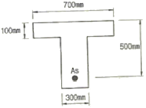
- 64.3mm
- 73.6mm
- 76.9mm
- 80.9mm
(정답률: 알수없음)
62. 아래 표에서 설명하는 비파괴 시험 방법은?
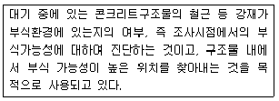
- 자연전위법
- 초음파법
- 방사선법
- 전자파법
(정답률: 알수없음)
63. 일반적으로 슈미트 해머를 사용해서 일정한 충격 에너지를 사용하고 충격을 가하여 움푹 패거나 또는 되밀어치는 크기를 측정하는 비파괴 시험방법은?
- 표면 경도법
- 관입저항법
- 인발 시험
- 머추리티 미터
(정답률: 46%)
64. 지름이 400mm인 원형나선 철근기둥이 그림과 같이 축방향 철근 6-D25이며, 나선철근 D13이 50mm 피치로 둘러싸여 있다. fck=35MPa, fy=400MPa일 때, 길이가 짧은 단주기둥의 최대 설계축하중강도(øPn)를 구하면? (단, ø는 0.7이고, D25 철근 1개의 단면적은 506.7mm2)
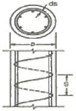
- 2126 kN
- 2897 kN
- 3891 kN
- 4864 kN
(정답률: 알수없음)
65. 철근콘크리트보에서 스터럽과 굽힘철근을 배근하는 주된 목적은?
- 압축측의 좌굴을 방지하기 위하여
- 콘크리트의 휨에 의한 인장강도가 부족하기 때문에
- 보에 작용하는 사인장응력에 의한 균열을 막기 위하여
- 균열 후 그 균열에 대한 증대를 방지하기 위하여
(정답률: 알수없음)
66. 일반적으로 정사각형 확대기초에서 펀칭 전단에 대한 위험한 단면은? (단, d : 유효깊이)
- 기둥의 전면에서 기둥 두께만큼 양쪽으로 떨어진 면
- 기둥의 전면
- 기둥의 던면에서 d/2만큼 떨어진 면
- 기둥의 전면에서 d만큼 떨어진 면
(정답률: 알수없음)
67. 인장이형철근 D29를 정착시키는데 필요한 기본정착길이는? (단, D29철근의 공칭지름은 28.6mm이고, 공칭단면적은 642.4mm2이며, fy=350MPam fck=24MPa이다.)
- 946mm
- 1124mm
- 1226mm
- 1327mm
(정답률: 알수없음)
68. 다음 각 열화 과정과 잠복기에 대한 설명이 틀린 것은?
- 중성화-중성화의 진행상태가 철근위치까지 도달하기 않은 상태
- 영해-강재의 부식 개시로부터 부식 균열발생까지의 기간
- 동해-일화가 나타나지 않은 상태
- 화학적 부식-콘크리트의 변상이 나타날 때까지의 기간
(정답률: 알수없음)
69. 철근콘크리트 구조물의 내하력 평가를 위한 재하시설이 시험하중의 규정으로 옳은 것은? (단, D는 고정하중, L은 활하중)
- 해당 구조부분에 작용하고 있는 고정하중을 포함하여 설계하중의 50%, 즉 0.5(1.2D±1.6L) 이상이어야 한다.
- 해당 구조부분에 작용하고 있는 고정하중을 포함하여 설계하중의 85%, 즉 0.5(1.2D±1.6L) 이상이어야 한다.
- 해당 구조부분에 작용하고 있는 고정하중을 포함하여 설계하중의 100%, 즉 0.5(1.2D±1.6L) 이상이어야 한다.
- 해당 구조부분에 작용하고 있는 고정하중을 포함하여 설계하중의 130%, 즉 0.5(1.2D±1.6L) 이상이어야 한다.
(정답률: 알수없음)
70. 콘크리트 구조물의 중성화를 방지하기 위한 신축시의 조치로서 잘못된 것은?
- 충분한 습윤양생을 실시한다.
- 다공질의 골재를 사용한다.
- 콘크리트를 충분히 다짐하여 타설하고 결함을 발생시키지 않는다.
- 투기성, 투수성이 작은 마감재를 사용한다.
(정답률: 알수없음)
71. 단면 복구재로서 폴리머 시멘트계 재료가 일반 콘크리트재료보다 우수하지 않은 것은?
- 염분 차단성
- 내화ㆍ내열성
- 부착성
- 방수성
(정답률: 알수없음)
72. 경간 10m의 보를 대칭 T형보로서 설계하려고 한다. 슬래브 중심간의 거리를 2m, 슬래브의 두께를 120mm, 복부의 폭을 250mm로 할 때 플랜지의 유효폭은?
- 4000mm
- 3750mm
- 2170mm
- 2000mm
(정답률: 알수없음)
73. 아래 그림의 직사각형 단철근보에서 공칭 전단강도(Vm)를 구하면? (단, 스터럽은 D13(공칭단면적 126.7mm2)을 사용하며, 스터럽 간격은 150mm, fy=350MPa이고, fk=24MPa이다.)
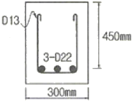
- 158.2kN
- 282.5kN
- 376.3kN
- 463.2kN
(정답률: 알수없음)
74. 교량 바닥판 상면 두께 증설공법의 특징으로 적절하지 않은 내용은?
- 일반 포장용 기계를 쓸 수 있고 공기가 짧다.
- 공종 항목이 적고, 고도의 시공 기술이 요구되지 않는다.
- 바닥판 강성과 균열 저항성이 증가한다.
- 고정하중의 증대가 따르므로 증가되는 바닥판 두께가 제한된다.
(정답률: 알수없음)
75. 균열보수공법 중에서 저압ㆍ지속식 주입공법에 대한 설명으로 틀린 것은?
- 저압이므로 실(seal)부 파손이 작고 정확성이 높아 시공관리가 용이하다.
- 주입기에 여분의 주입재료가 남아 있으므로 재료 손실이 크다.
- 주입되는 수지는 동심원상으로 확산되므로 주입압력에 의한 균열이나 들뜸이 확대되지 않는다.
- 주입재는 에폭시 수지 이외에는 사용할 수 없어서 습윤부에 사용이 불가능하다.
(정답률: 알수없음)
76. 아래 그림의 단순 PSC보에서 등분포하중 w=50kN/m이 작용하고 있다. 등분포상향력과 등분포하중이 비기기 위한 프리스트레스힘 P는 얼마인가?
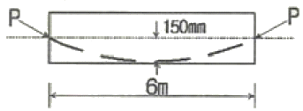
- 1500 kN
- 1450 kN
- 1400 kN
- 1350 kN
(정답률: 알수없음)
77. 옹벽의 안정에 대한 설명으로 틀린 것은?
- 전도에 대한 저항휨모멘트는 횡토압에 의한 전도모멘트의 1.5배 이상이어야 한다.
- 활동에 대한 저항력은 옹벽에 작용하는 수평력의 1.5배 이상이어야 한다.
- 전도 및 지반지지력에 대한 안정조건은 만족하지만, 활동에 대한 안정조건만을 만족하지 못할 경우에는 활동방지벽 혹은 횡방향 앵커 등을 설치하여 활동저항력을 증대시킬 수 있다.
- 지반에 유발되는 최대 지반반력이 지반의 혀용지지력을 초과하지 않아야 한다.
(정답률: 알수없음)
78. 아래 그림과 같은 조건에서 탄성파법에 의해 측정한 균열깊이(d)는 얼마인가? (단, Tc-To법을 사용하며, 측정한 Tc=250μs, To=120μs이고, Tc는 균열을 사이에 두고 측정한 전파시간, To는 건전부 표면에서의 전파시간을 나타낸다.)
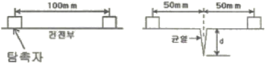
- 78.4mm
- 84.9mm
- 91.4mm
- 98.9mm
(정답률: 알수없음)
79. 직사각형 단면을 가지는 단순보에서 콘크리트가 부담하는 공칭전단강도(Vc)는? (단, 직사각형 단면의 폭은 300mm, 유효깊이는 500mm, fck는 27MPa이다.)
- 54.6kN
- 72.6kN
- 89.6kN
- 129.9kN
(정답률: 알수없음)
80. 아래 표에서 설명하는 보강공법은?
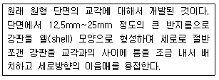
- 콘크리트 라이닝 공법
- 강판 라이닝 공법
- 연속섬유를 이용한 라이닝 공법
- 강판접착 공법
(정답률: 알수없음)